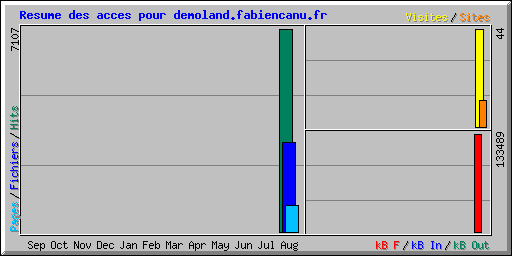

| Résumé par mois | ||||||||||||
|---|---|---|---|---|---|---|---|---|---|---|---|---|
| Mois | Moyenne journalière | Totaux mensuels | ||||||||||
| Hits | Fichiers | Pages | Visites | Sites | kB F | kB In | kB Out | Visites | Pages | Fichiers | Hits | |
| Aug 2011 | 546 | 240 | 71 | 3 | 12 | 133489 | 0 | 0 | 44 | 926 | 3124 | 7107 |
| Totaux | 133488 | 0 | 0 | 44 | 926 | 3124 | 7107 | |||||
| Generated by Webalizer Version 2.01 |